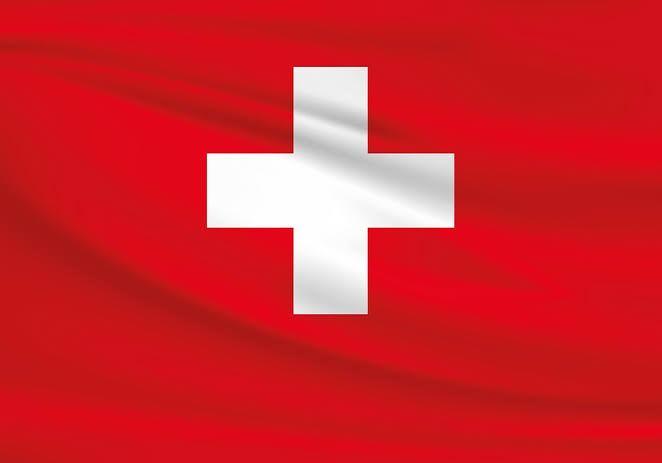

Suiza es un país montañoso de Europa Central, con varios lagos, aldeas y las altas cimas de los Alpes. Sus ciudades tienen barrios medievales, con monumentos como la torre del reloj Zytlogge en su capital, Berna, y el puente de madera de la capilla en Lucerna. El país también es famoso por sus centros de esquí y los senderos de excursionismo. Las industrias bancaria y financiera son clave, y los relojes y el chocolate de Suiza son conocidos en todo el mundo.

CARACTERISTICAS
Alta calidad de vida – Destaca en salud, educación y estabilidad económica.
Paisajes alpinos – Famosa por sus montañas, lagos y estaciones de esquí.
Economía fuerte – Basada en bancos, relojería, farmacéutica y tecnología.
Neutralidad política – No participa en guerras y alberga organismos internacionales.
Multilingüismo – Tiene 4 idiomas oficiales: alemán, francés, italiano y romanche.
Democracia directa – Los ciudadanos pueden votar en referéndums regularmente.
Banca y finanzas – Un centro financiero global con fuerte privacidad bancaria.
Sistema de transporte eficiente – Trenes puntuales y conectividad de primer nivel.
Alto costo de vida – Uno de los países más caros del mundo.
Famosa por su chocolate y queso – Productos de alta calidad reconocidos mundialmente.